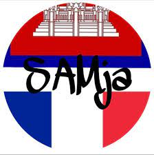
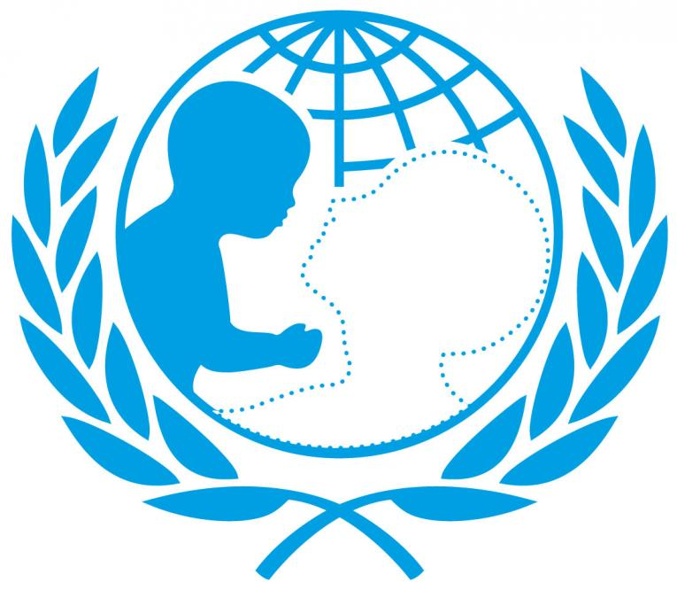

Je suis actuellement une étudiante à Kedge BS à Bordeaux.
Discover Le WagonJ'ai 20 ans et je sors de deux années de CPGE ECE à Paris. Je suis passionée par la lecture et je fais de nombreuses activités manuelles.
Lorsque j'étais encore au lycée, je suis devene une jeune ambassadrice UNICEF et également une adhérente de l'association SAMja qui récoltait des fonds pour des enfants malades.
 